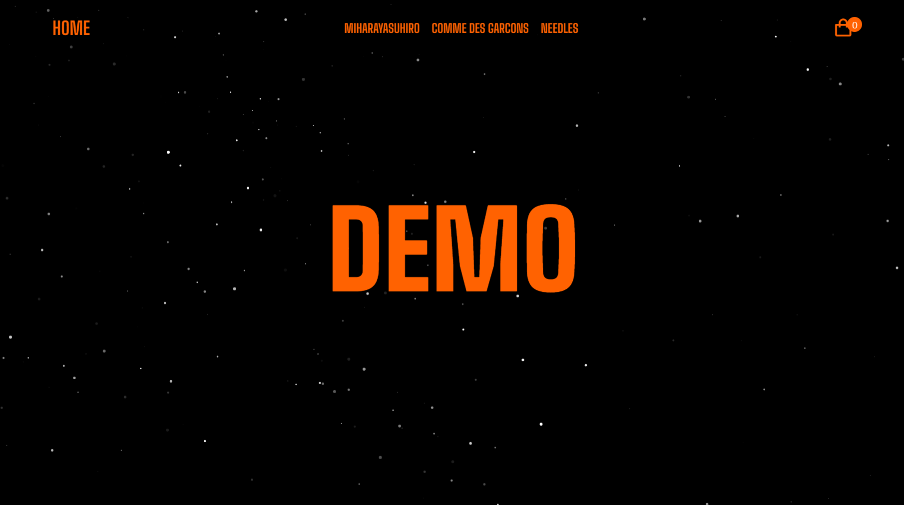

01
APPAREL_EC

HTML CSS JS jQuery
各ページでの商品、価格、商品名の表示、各ブランドのスライダー、商品の購入画面、関連商品の表示、カート内の商品数の表示、カート内商品の削除、お会計などの一通りの機能を付与しております。関連商品の表示ではコンテンツベースフィルタリングをしており選択した商品と同じジャンルのものを表示させています。
HTML CSS JS jQuery
各ページでの商品、価格、商品名の表示、各ブランドのスライダー、商品の購入画面、関連商品の表示、カート内の商品数の表示、カート内商品の削除、お会計などの一通りの機能を付与しております。関連商品の表示ではコンテンツベースフィルタリングをしており選択した商品と同じジャンルのものを表示させています。

html css js
Google Maps Platformを使用して作成しました。このアプリは、福岡市に密集しているラーメン屋さんの場所を一目で確認できるようにデザインされています。福岡市に住んでいる方や旅行で訪れる方に最適です。ラーメン屋さんをジャンルごとに色分けして表示しており、気になるお店を簡単に見つけることができます。また、土地勘のない方でも現在地を取得して周辺のラーメン屋さんを探すことができる機能も備えています。

html css ASP.NET（Ｃ＃）SQLServer
主な機能はアカウント作成、ログイン、会員情報の変更、会員の退会（アカウントの削除）、ログアウト、メッセージ投稿、投稿に対してレスの返信、編集、削除などの機能が付与されています。使用例としては不特定多数の人とコミュニケーションをとることができます。

html css(bootstrap) php xampp
主な機能はお知らせ、アカウント作成、ログイン、写真のアップロード、アルバム、掲示板によるトークなどの機能が付与されています。使用例としては、サークルやクラブのイベント写真を共有したり、会議の日程や変更事項をお知らせとして投稿したり、メンバー間でのコミュニケーションを掲示板を通じて行うことが挙げられます。